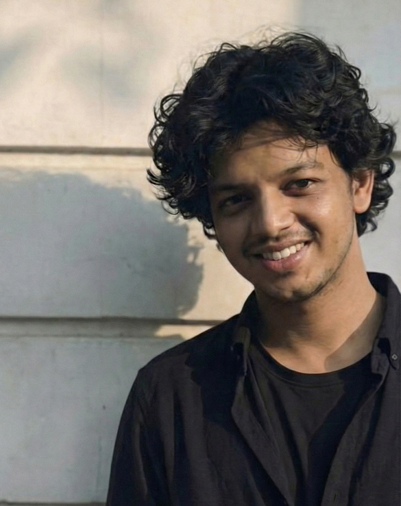

AI Intern, MIT & Mayo Clinic
Working on autonomous ICU ventilation management, causal analysis of intervention strategies, and agentic decision-support systems for respiratory optimization.
Hi! I am Ajmal, and I study AI at IIT Madras. I’m exploring how AI can better understand medical data, from scans to patient records, and how we can use that to build healthcare systems that actually help people.
Recently, projects I have worked on include autonomous ICU ventilation management at MIT & Mayo Clinic, 3D multimodal medical representation learning at CMU, clinical reasoning evaluation for LLMs at MBZUAI, and brain MRI reconstruction at Stanford.
I am always happy to discuss research ideas, collaborations, and useful AI systems. I am based in Kerala, India.

My interests are in studying and building systems for medical reasoning, with work broadly spanning clinical decision support, 3D medical representation learning, causal analysis of interventions, and reasoning in large language models.
More generally, I am excited by questions around how LLMs reason, when they fail, how they can adapt from feedback, and how these systems can become useful in clinical settings without losing rigor.
Causal AI
Multimodal World Models
Agentic Systems
Working on autonomous ICU ventilation management, causal analysis of intervention strategies, and agentic decision-support systems for respiratory optimization.
Exploring 3D multimodal medical representation learning.
Built preprocessing and training pipelines for 3D brain MRI compression and reconstruction using PyTorch and large-scale ADNI scans.